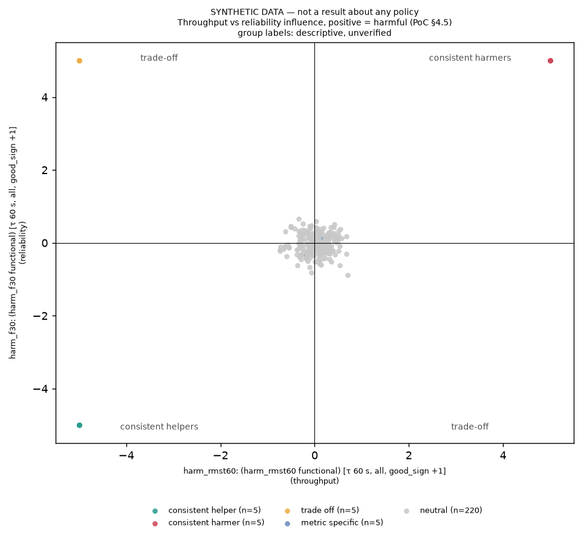

The code that computes "which training recordings help or hurt the robot" arrived from the owner's cluster unreviewed. This feature checked it against the spec, fixed eight kinds of gap, and tested the result on made-up data and on a tiny real-model trial. No real attribution result exists yet; that needs the GPU server.
This project wants to find which of its training recordings make a trained robot worse or better. The method for that (called influence, from a research method named CUPID) was written on the owner's compute cluster and copied into this repository without anyone checking it. This feature checked that copy against the project's spec, found gaps, and fixed them: it now follows CUPID's own formula, refuses to read data it should not see, writes down exactly what each score means, and lays out the whole experiment as a chain of cluster jobs that can be inspected before anything is submitted.
Every check passes on made-up test data and on a tiny trial with a real robot model, and the analyzer re-ran them independently. But there are no real attribution results yet, because real results need the GPU server, which this feature deliberately did not touch. Three decisions are the owner's: how big the first server run should be (about 264 hours of one graphics card at the largest setting, about 48 at the smallest, lower-bound estimates), whether to keep a scoring convention that differs from CUPID's, and a rule for calling a recording "consistently harmful".
Every technical term is defined where it first appears and again in the glossary. Precise names, commands and citations are in the tables and in the "Technical detail" part after the explanations.
What this report does not show. No real influence scores, no retrained-arm verdicts, no real recovery numbers. Every figure and every Step 4, recovery and grouping check here uses SYNTHETIC inputs (made-up data planted to test the code) and is labelled so. The one real-model run is a smoke run (a 2-step toy checkpoint, 2 rollouts, 0 successes) and is not attribution-grade.
Flag for the owner: the default output function changed. The ported code took the gradient of the training loss. CUPID's paper says that choice "works poorly in practice" and uses the square of the model's output; square is now the default (S2). This changes what the next server run computes: feature files and scores made with the old default are not comparable with new ones. stage.py features --preset branch reproduces the old behaviour. On 13 real samples the two choices point in different directions (cosine 0.402 at worst, 0.870 median; S2).
The first three below are the owner's call. None blocks this feature (the analyzer passed it with all three open); each changes what the server does or how results will be read.
The default chain is large because it builds both curation modes (owner-approved), the helpful-removal arms the spec asks for, and an extra metric (HRT) for the opposite-curations test. The job counts below were re-counted now with server_pipeline.py --tag demo --dry-run <flags> for the first four rows (313, 172, 112, 56 jobs; 66 trainings in the default) and come from the execution log for the others. GPU-hours are a lower bound: they count training only, at about 4 h each, a figure quoted from LeRobot's SmolVLA docs and unmeasured on our server (inferred). Evaluation, feature and attribution time are not derivable from anything recorded.
Setting (flags of server_pipeline.py) | Arms | Jobs | Trainings | Training GPU-hours (lower bound, inferred) |
|---|---|---|---|---|
| Before this feature (6 arms, 3 seeds) | 6 | 74 | 21 | about 84 |
Default now: --curation both, 4 metrics, 3 seeds, 2 random draws, 20-drop gate | 21 | 313 | 66 | about 264 |
--curation per_task | 11 | 172 | 36 | about 144 |
--curation per_task --metrics f30 hrt60_lin (keeps the opposite-curations test) | 7 | 112 | 24 | about 96 |
the same, --seeds 0 1 | 7 | 76 | 16 | about 64 |
the same, --seeds 0 1 --random-draws 1 --no-ac75 (smallest) | 5 | 56 | 12 | about 48 |
--curation per_task --metrics f30 rmst60 auc_expected --no-ac75 (old metric set plus helpful arms) | 8 | 130 | 27 | about 108 |
The analyzer's suggestion (round 1, labelled inferred): make --curation per_task --metrics f30 hrt60_lin the first server run (112 jobs, 24 trainings), which still covers the spec's opposite-curations test and the harmful-versus-random comparison, and run the global mode second. PoC §10 (p. 20) lists "Compute budget" as an open decision. The shrinking flags are documented in the server_pipeline.py docstring.
Our default subtracts the average return before computing influence. CUPID instead scores success as +1 and failure as −1 with no centring. We derived (and tested numerically, identity error about 4e-15) that the two give the same ranking only when exactly half of the rollouts succeed; at a success rate of 0.3 they differ (Kendall's τ between the rankings 0.667, a counterexample). Centred is the planner's default, not owner-approved; its justification (baseline subtraction does not bias the estimate) is argued for a different gradient than ours, so it does not obviously carry over (inferred). stage.py attribute --cupid-returns gives CUPID's. Options: keep centred (recorded divergence), or make ±1 the default for yes/no columns so the F(30) column is CUPID's own.
The spec's §4.2 says "Improve every metric" and "Degrade every metric" (p. 10). The code calls an episode a consistent harmer when at least 2 of the 5 metrics flag it and none flag it as helpful. That is a recorded divergence and a judgement call (inferred, nothing measured). The specific risk: two near-redundant reliability readouts, F(30) and the censored rate, can by themselves make an episode "consistent" while all the speed metrics are flat. The labels are descriptive and unverified either way, since the verified claim comes from the retraining test. Options: keep, require all five, or require agreement across the speed block and the reliability block. A one-line change.
Migration note. Feature files written before analyzer round 2 (an absolute or other-version dataset_root in the manifest, such as the October cluster's) are now refused by attribute_run; regenerate them with stage.py features (the chain's feature jobs do). Editing a manifest's dataset_root by hand defeats the check. None of those files is in this repo's store, and the old loss-form features would not match the new default anyway.
Owner-approved in this feature. (a) Scope, 2026-10-20: "Just dismiss the parts that need the server and fix everything else." (b) Curation unit, Q1: "Both, per-task headline (Rec.)": both curation modes are built, per-task is the reported headline, global top-k (the spec's literal text) is reported alongside; this roughly doubles the server's retraining arms and the owner accepted that. Earlier owner decisions carried: SmolVLA, per-subset normalisation, all PoC metrics (family W as the attribution family), ghost events out of scope, n_boot 1000, and the ground-truth rulings.
Terms in the order you meet them, including our own labels. Story pages link back here.
| Term | Plain meaning |
|---|---|
| The robot-learning setting | |
| Demonstration, episode | One recording of a person guiding a robot arm through a task once, stored as a sequence of time steps (camera images, robot state, commands). The two words mean the same thing here. |
| LIBERO | A simulated robot-arm benchmark: household-style tasks, each with recorded human demonstrations. Our corpus is 1,000 demonstrations over 20 LIBERO tasks. |
| LeRobot | An open-source Hugging Face library and file format for robot-learning data and training. Our datasets and the training code use it. |
| Policy | A trained model that decides what the robot does next from what its cameras see and the instruction it was given. |
| SmolVLA | The compact open-source robot model (a "vision-language-action" model: it reads images and a text instruction and outputs motions) that this project trains as its policy. |
| Checkpoint | A saved copy of a model's learned numbers at some point in training. |
| Rollout | One attempt by a trained policy to do a task in the simulator, recorded and judged success or failure. |
| Seed | One random starting point for training. Training the same recipe from several seeds shows how much of a result is luck. |
| Influence and attribution | |
| Training-data attribution | Working out which training recordings are responsible for how a trained policy behaves, which help and which hurt. The purpose of the whole project. |
| Influence | A number per training episode saying how much it pushed some later outcome up or down. Positive influence on a good outcome means the episode helped. |
| CUPID | A published method (paper, plus MIT-licensed code) that computes influence of each training demonstration on how robot rollouts turned out. The spec calls it the best starting point to fork. We cite it as "CUPID" throughout; its released code is at agiachris/cupid. |
| ATHENA | A second paper in docs/papers/ on scaling influence to large robot models; we take its Kronecker projection and its per-task grouping from it. |
| TRAK, kronfluence | Existing open-source influence libraries that we checked and chose not to adopt (see the reinvention audit). |
| Gradient | The direction in which a model's numbers would have to change to raise or lower some quantity. Influence is built from gradients. |
| Output function | The quantity whose gradient is taken. square (CUPID's, now our default): the squared size of the model's predicted motion. loss (the ported code's choice): the training error. CUPID's paper says the loss form "works poorly in practice". |
| Projection, Kronecker, 7,488 dims | A gradient has hundreds of millions of numbers; we shrink it to 7,488 using a random projection applied separately per layer (a Kronecker projection, 117 layers × 64). It keeps the geometry approximately and makes the arithmetic affordable. |
| Gauss-Newton Hessian, damping | A matrix built from the training gradients that corrects influence for gradients that overlap. Damping adds a small constant so the matrix can be inverted safely. |
| Return | One number per rollout per metric that influence is measured against. For example, the F(30) return is 1 if the rollout finished within 30 s and 0 otherwise. |
| Functional | The exact measured quantity a result is about, with its time cap. F(30) = the chance of finishing within 30 s. RMST(60) = average time to finish, counting up to a 60 s cap. HRT(60) = how the robot's time compares with the human demonstrators'. AUC = the chance the robot beats a sampled human time. censored rate = share that never finished by the cap. |
| Time cap, τ | The cutoff in seconds beyond which a rollout counts as not having finished (60 s here). Not to be confused with Kendall's τ. |
| Family W | The set of five whole-task metrics (F(30), RMST, AUC, HRT, censored rate) declared as the attribution family. Every attribution column and every verdict says which family it is on. |
| Centred returns | Subtracting the average return before computing influence, so only differences from typical count. Our default for every column. CUPID instead uses a plain +1 for success and −1 for failure with no centring ("±1"). |
| Ensemble, z-score | Averaging the score tables of several seeds after rescaling each to mean 0 and standard deviation 1 (a z-score), so seeds on different scales can be combined. |
| Kendall's τ | A score from −1 to 1 for how closely two rankings agree (1 = identical order, 0 = unrelated). Used to ask whether two metrics rank episodes alike. |
| Key contract | Our rule that scores belong to exact (episode id, content hash) pairs, so scores for a version of the data a model was not trained on are refused. |
| Planting damage and keeping methods blind | |
| Corruption, answer key | An earlier feature planted known damage in a copy of the dataset: 91 of 960 candidate episodes, seven kinds. The answer key is the separate table recording which and how. |
| v0, v1, v2, v3 | Dataset versions. v0: the original clean data. v1, v2: earlier damaged copies, now off-limits (fenced). v3: the current damaged dataset; in prose, "the corrupted dataset". |
| Blind, fenced | A version is blind if a method reading it cannot tell which episodes were edited. Fenced means our loader refuses to open it for a method. |
open_for_method | The single safe entry point a method must use to read a dataset version; it refuses fenced versions, answer-key-derived subsets and tampered copies. |
| Content hash, lineage, MLflow | A content hash is a fingerprint of an episode's data (change one byte, it changes). Lineage is the record of which dataset version and run came from which. MLflow is the open-source experiment logger we keep that record in. |
| Scratch store | A throwaway copy of the record store used for tests, so the real one is never touched. We prove that by comparing its fingerprint (sha256) before and after. |
| Scoring and verifying | |
| AUROC, recall@13 | AUROC: from 0.5 (guessing) to 1.0 (perfect), how well a ranking puts damaged items above clean ones. recall@13: of the 13 damaged episodes of one kind, the share within the top 13. |
| Heuristic, recovery | A heuristic is a simple one-line statistic that needs no learning. Recovery is how many planted damaged episodes a method finds. |
| Arm | One variant of the retraining experiment: a model retrained after removing a particular set of episodes. |
| Harmful / helpful removal, random control | Remove the episodes the method calls most harmful (the model should improve), or most helpful (it should get worse), and compare with removing the same number at random. |
| Per-task vs global curation | Per-task: remove the top k from every task (here k = 5, so 43 of 48 episodes remain in each of 20 tasks). Global: remove the top N episodes overall (N = 100). Per-task is the headline; both are built (owner-approved). |
| Macro-KS gate | A test of whether the whole distribution of finishing times changed at all between two policies, averaged over tasks. Step one of the spec's two-step verdict: only if it fires do we look at which direction each metric moved. |
| Bootstrap CI, n_boot, Holm | A bootstrap confidence interval is an uncertainty range from resampling the data; n_boot = 1000 is the number of resamples (owner ruling). Holm is a correction for checking several metrics at once so luck does not look like a finding. |
| Consistent helper / harmer, trade-off, metric-specific, neutral | Descriptive labels for episodes: helps (or hurts) on at least two metrics with none opposed; helps one metric and hurts another; moves only one metric; moves none. Unverified by design. |
| The cluster and our run types | |
SLURM, sbatch, afterok | SLURM: the job scheduler used on shared GPU clusters (jobs queue and run on a free machine). sbatch submits one job; --dependency=afterok starts it only after named jobs finished successfully. |
| GPU-hour | One graphics card working for one hour. Our estimates count only training, at about 4 h per training, a figure quoted from LeRobot's SmolVLA docs and unmeasured on our server, so they are lower bounds. |
| Server | The owner's GPU cluster. Anything needing it (real training, rollouts, feature extraction on real checkpoints, running the chain, verdicts on retrained arms) is out of scope here by the owner's ruling. |
| Dry run | Printing every job and its command without submitting anything. |
| MPS, smoke run | MPS is Apple's GPU backend on this Mac. A smoke run is a tiny end-to-end trial that shows the machinery runs; it is not attribution-grade. |
| SYNTHETIC | Made-up inputs built to test code. A synthetic number shows the code behaves correctly when the answer is planted; it is never a result about any policy. |
| Attribution-grade | Run at the full settings (20,000-step training, full rollouts) needed for a result to count. |
Everything above is meant to stand alone. The rest of this report is the reference: spec grounding, the dataflow, the stories, what changed, the demo, the process trail and the reading guide.
docs/papers/CUPID_Influence_Functions_arXiv-2506.19121.pdf: App. A.1 Eq. 9 p. 18 (the square output function and Gauss-Newton Hessian), App. A.2 p. 19 (±1 returns, B = 64 draws), Prop. 2 §D.2 p. 27 (sum over steps), and its released code (agiachris/cupid @ 2941eba9, vendored for the parity check). ATHENA_Influence_Functions_arXiv-2606.16208.pdf: §3.2 p. 3 and §4.2 Eq. 7 p. 5 (per-task grouping), §4.1 (Kronecker projection), App. A.1 Eq. 14–15 p. 14 (flow-matching form).The analyzer compared our estimator with CUPID's paper and released code point by point. Where we match, the arithmetic was tested against CUPID's own functions; every difference is stored with its source in attribution.DIVERGENCES and logged as a parameter of every run.
| What | CUPID (paper / released code) | Ours now | Status |
|---|---|---|---|
| The quantity whose gradient is taken (output function) | Square of the model's output on both the training and rollout side (App. A.1 Eq. 9). The training-loss form "works poorly in practice" (quoted) | square on both sides (S2 changed the default) | matches CUPID |
| How overlapping gradients are corrected (Hessian) | Gauss-Newton matrix, 1/(|D|H) Σ g gᵀ (quoted p. 18) | ΦᵀΦ/N of the training features | matches |
| How per-step influence becomes per-episode | Sum over steps (Prop. 2, §D.2 p. 27); sum_of_sum then net | Group sums; equals CUPID's vendored functions to 2.84e-14 (check 7a) | matches |
| An extra model-output term in TRAK | get_out_to_loss_grad = ones (read in its code) | none | equivalent |
| Damping added to the Hessian | 0.0 (lambda_reg, train_trak.sh) | 1e-3 × mean of the diagonal | recorded difference (damping) |
| Gradient shrinking (projection) | Dense random projection to 4,000 numbers over all parameters | Kronecker per-layer projection, 7,488 numbers over the action-expert layers (ATHENA's route) | recorded (projection) |
| Random draws averaged per feature | B = 64 | K = 4 shared draws | recorded (draws) |
| How returns are weighted | +1 / −1, no centring (App. A.2 p. 19) | Centred by default; --cupid-returns gives ±1 | recorded; open owner decision 2 |
| Kinds of return | Binary success/failure only | One return per PoC metric, mostly continuous (spec §4.3) | recorded (by the spec) |
| How many frames are used | Every sample | Every 2nd training frame, every 4th rollout frame | recorded (strides) |
| Numerics | — | fp32 weights as the eval stage loads them (13.5% median feature difference from LeRobot's bf16 loader, earlier measurement) | recorded (numerics) |
| Model family | Diffusion-policy noise prediction | SmolVLA flow matching (ATHENA Eq. 14–15 gives the form) | recorded (model_family) |
| Failure-type returns | — | An indicator over all rollouts (spec says "only rollouts with a specific failure type"); types with at least 5 rollouts (inferred threshold) | recorded (failure_type_returns) |
| Averaging seeds | TRAK averages raw scores across models | Mean of per-seed z-scores | recorded (ensemble params, round-2 fix) |
20 of 20 unsafe combinations (4 entry points × 5 unsafe inputs: fenced v1, fenced v2, answer-key-derived, its descendant, a flipped byte) are refused, none leaves a run behind, and the clean v3/candidate (960 episodes) still opens.
Default output function is now CUPID's square; our score equals CUPID's own vendored code to 2.84e-14; nine remaining differences named with sources. The change alters what the next server run computes.
32 score columns, 32 declaration rows; feature files are fingerprinted and, after round 2, refused if not computed on the exact dataset copy and rollouts being attributed.
21 arms and 313 jobs (66 trainings) in the default chain; a seed summary that counts a direction only where the macro-KS gate fired (round-1 defect fixed, 13/13).
Scorer returns AUROC 1.0 for planted columns and 0.527 for a random one (SYNTHETIC); the §4.5 hypotheses were committed before the scoring code existed.
One example file holds all machine settings; run names resolve only within their chain; the log folder is created before any real submission (round-1 defect fixed).
On a planted synthetic table, 20 of 20 planted episodes get the right group and 220 of 220 noise episodes come out neutral; both §4.5 figures drawn, labelled SYNTHETIC.
10 stage runs through the real command-line tool on a scratch store, 6 refusals, 3 integration defects found and fixed; a real-model smoke run completed, not attribution-grade.
The plan began with a compliance matrix of 20 spec requirements the ported code touches. Counts at the time of the plan (each row tagged measured, quoted or inferred there): 8 met, 7 partly met, 1 divergence awaiting the owner, 4 missing. After the 8 stories every row is met or recorded:
| Gap found in the ported code | Spec | Fixed in |
|---|---|---|
| Attribution used a weaker blindness check; training and feature extraction used none | §2.1 item 4 | S1 |
| Gradient of the training loss, which CUPID rejects; differences from CUPID unrecorded or mis-stated (a wrong formula for the centring note) | §4.3, §6 | S2 |
| No record of which quantity a column explains; feature files unfingerprinted; rollouts silently dropped; a seed's failure-type column silently dropped in the ensemble | §3.4, §4.4, §2.1 item 1 | S3 |
| No helpful-removal arms, no comparison with a random control, no HRT-versus-reliability test, no seed summary; per-task curation never put to the owner | §9.1 Step 4, §2.6, §4.5 | S4 |
| Nothing scored attribution against the planted damage | §2.1 item 4, §4.5 | S5 |
| Cluster paths hard-coded; "latest run" could be another experiment's; temp files outside the project | §2.1 item 1 | S6 |
| No four groups, heatmap, scatter or aggregation by task | §4.2, §4.5 | S7 |
| Contracts only unit-tested with stubs; three integration defects | §9.2, §2.1 item 1 | S8 |
There is no real attribution result to demo, so this section shows the pieces working on the data that exists: real counts of the planned experiment, a real-model gradient comparison, and clearly labelled synthetic figures.

artifacts/s8_trace_select_SYNTHETIC.json (S8).The curation operations were run through select_run on the real v0/candidate manifests (20 tasks × 48 episodes) with a synthetic score table. Per-task arms keep exactly 43 per task, so the task mix is untouched; global arms keep the same total but shift the mix (artifacts/s4_select_counts_SYNTHETIC_SCORES.csv):
| Arm | Mode | Episodes kept | Per-task counts |
|---|---|---|---|
harm-f30-k5 | per task (headline) | 860 | 43 in every task |
random0-k5 | per task (matched control) | 860 | 43 in every task |
gharm-f30-n100 | global | 860 | between 38 and 46 per task |
grandom0-n100 | global (control) | 860 | between 39 and 46 per task |
drop-random-20 | 20-drop gate | 940 | between 44 and 48 per task |
From the repo root. The first block re-counts the experiment's size; the second re-runs the checks (all read-only on the real store; they write scratch copies under data/scratch/).
for f in "" "--curation per_task" "--curation per_task --metrics f30 hrt60_lin" \
"--curation per_task --metrics f30 hrt60_lin --seeds 0 1 --random-draws 1 --no-ac75"; do
.venv/bin/python scripts/server_pipeline.py --tag demo --dry-run $f | tail -1 | cut -c1-24
donewould submit 313 jobs
would submit 172 jobs
would submit 112 jobs
would submit 56 jobs.venv/bin/python scripts/verify_attribution.py # estimator maths, CUPID parity
.venv/bin/python scripts/verify_training_attribution.py --functionals # S3
.venv/bin/python scripts/verify_training_attribution.py --pipeline # S4 chain shape
.venv/bin/python scripts/verify_training_attribution.py --step4 # S4 summary (synthetic)
.venv/bin/python scripts/verify_training_attribution.py --groups # S7 (synthetic)
# also --blind (S1), --recovery (S5), --names (S6), --integration (S8), --local-smoke --device mps (S8, ~8 min)pass: True (29/29)
S3 pass: True (17/17, 20s)
S4 pipeline pass: True (8/8, 2s)
S4 summary/selects pass: True (13/13, 4s)
S7 pass: True (9/9, 6s)Output above was captured now (HEAD 6b49d1c). Each check also prints [PASS] R7 real mlflow.db sha256 unchanged 306af4123fda7e63....
Dismissed by the owner's ruling, listed once so this report stays honest. No stories, acceptance criteria or runbook work were written for these:
smolvla_base revision discrepancy in the cluster's cache (5e8d12a6 versus d9f33c94).Round 1 (analyzer, HEAD 139c32d) re-ran verify_attribution.py (29/29), all eight modes of verify_training_attribution.py and nine older verifiers; it also measured separation of per-sample gradients on the real SmolVLA on MPS (a batch of 3 against three batches of 1 differ by 0.27–0.64%, so no cross-sample leakage). Round 2 (HEAD 520be42) re-ran all 18 verifier commands (all exit 0) and checked each round-1 fix in the code; the real mlflow.db sha256 306af4123fda7e635892d459a2e34008ba1cb62f6c4fce152c546e0da7bdde79 was unchanged before and after. The refactorer then ran the same 18 commands before and after its edits on aa47526 and 6dce7d2: per-check results identical apart from run ids and the chain hash. I re-ran the five fast checks and the dry-run counts now (HEAD 6b49d1c).
Unverified, said plainly: S8.3 (the real-model smoke) was re-run by the executor on the final code but not by the analyzer (about 8 minutes); S2.4 (the 300 s per call checkpoint smoke) was only partly re-run by the analyzer (it loaded the same checkpoint and got finite 7,488-dim features for both functions). The smoke's rank agreement is undefined (2 rollouts). The 4 h per training figure is an unmeasured estimate. That #SBATCH lines do not expand variables is from the sbatch manual, not re-read. The cost of hashing the trajectories folder per attribute run is unmeasured at 1,000 rollouts. Nothing that needs the server is verified.
| Round | Verdict | Sent back to | What was caught |
|---|---|---|---|
| 0 (before this feature) | — | — | The ported branch (3 commits, about 2,000 lines) had gone through the build skill only: no plan review, no analyzer, no refactor, and a 56-line report. |
| Plan | — | — | 20-row compliance matrix; 8 stories; one blocking owner question (curation unit), answered "Both, per-task headline". Premises found false while executing: assert_blind('v0') passed a subset cut with the answer-key operation; the ensemble silently dropped a failure-type column absent from seed 0; the quoted 20 s to open a version is 2.3 s here. |
| 1 | REWORK | executor | (1) The Step 4 summary counted directions when the macro-KS gate had not fired (measured: a planted case read "expectation met in 3/3"); (2) the SLURM log folder was never created, so on a new account every job would die before starting; (3) feature files were not tied to the data they claimed (a v0-root feature set could attribute a v3 subset; rollout features from another eval of the same checkpoint would pass); (4) stale --estimator references in two docstrings; (5) --functionals exited 1 without --manifest. Non-blocking: ensemble params lacked the divergences, group rule vs "every metric", step4-summary without chain id, a catalog read needing a docstring. |
| 2 | PASS | — | All five fixed and re-run (18 commands, rc 0). The executor kept the ≥ 2-of-5 group rule and recorded it as a named divergence; the analyzer did not accept the stated rationale (redundancy argues the other way), so the refactorer reworded it to say it is a judgement call with a specific risk. Left for the owner: cost, centring, the rule. |
| Refactor | — | — | Docs only: migration note in attribute_run, the pipeline docstring and two refusal messages; one-line docstrings on every stage.py command; unused imports removed. All 18 commands identical before and after. |
Earlier integration defects, caught by S8 before the analyzer saw them: the lineage trace from a select run dead-ended at the score table; a refused select left a FAILED run behind; and one S3 check expected the wrong error once the first was fixed. All three were invisible to tests that stub the lookup.
| Mechanism | Open-source alternative | Decision | Why |
|---|---|---|---|
KroneckerProjector + influence_matrix (influence.py, attribution.py) | trak projectors | kept | TRAK's projectors are dense and its fast one needs CUDA, so it cannot be tested on this Mac; chunking is by parameter count, not per layer (quoted from its source). The math core is about 40 lines, checked against a brute-force sum (7.4e-16). The swap is inferred-only. |
| same | kronfluence | kept | Its Hessians are identity/diagonal/KFAC/EKFAC, not CUPID's projected Gauss-Newton (quoted from its docs); adopting it would change the estimator. |
| same | pytorch-influence-functions, dattri | kept | Not CUPID's estimator; no return weighting (inferred). |
server_pipeline.py (sbatch --dependency=afterok) | submitit, Snakemake | kept | submitit's examples document no dependency chaining (quoted); Snakemake would be a second record system beside MLflow stage runs. Trade given up: no automatic retries or resubmission. |
vlapoc/step4.py (summary) | — | kept | Aggregates verdict.json, reuses vlapoc.verdict; small. |
vlapoc/recovery.py | — | kept | Wraps the existing groundtruth.score_recovery. |
analysis.aggregate_by (hand percentile bootstrap) | scipy.stats.bootstrap | kept, optional cleanup | A drop-in replacement; left alone as non-blocking. |
load_site (.env parser, ~15 lines) | python-dotenv | kept | A new dependency for 15 lines (inferred). |
No formal dispute reached the owner. In round 2 the executor kept the ≥ 2-of-5 group rule (its rationale: the five returns are partly redundant); the analyzer did not accept that reasoning but, because the labels are declared descriptive, did not block; the point went to the owner as decision 3. The owner's rulings in this feature: scope (2026-10-20) "Just dismiss the parts that need the server and fix everything else", and curation unit (Q1) "Both, per-task headline (Rec.)". Both are recorded in the brief.
Insertions and deletions outside tracker/ and calls/, from git diff --stat efee1db..HEAD: 22 files, 3,308 insertions, 158 deletions.
| File | Change | Lines added |
|---|---|---|
vlapoc/attribution.py | Divergences, ±1 encoding, declarations, feature digests and binding, ensemble guards | +394 |
vlapoc/influence.py | square output function, output capture, relative manifests | +149 |
vlapoc/analysis.py (new) | Groups, aggregation, heatmap, scatter, analyze run | +262 |
vlapoc/step4.py (new) | Gate-aware seed summary | +205 |
vlapoc/recovery.py (new) | Hypotheses and recovery matrix | +129 |
vlapoc/third_party/cupid_quality.py + LICENSE (new) | CUPID's two functions, verbatim, MIT | +59 / +21 |
vlapoc/runs.py, method_data.py, verdict.py | select checks before run creation; check order; extra tags | +40 / +11 / +8 |
scripts/stage.py | method_view, new stage commands, --lineage-root, chain-scoped names | +230 |
scripts/server_pipeline.py | Arms, verifies, score, analyze, summary jobs; site config; LOG_DIR | +184 |
scripts/verify_training_attribution.py (new) | Nine verifier modes, one per story | +1475 |
scripts/verify_attribution.py, verify_method_boundary_s3.py | Checks 6–8, smoke; boundary scan widened | +224 / +6 |
slurm/, docs/site-profile-cluster.env, .gitignore | Portable site config; no absolute paths | +20 +21 +12 +9 +1 |
Follow one attribution run through the chain, then the checks (spec §9.1 Steps 3–4, p. 19; §4.3–§4.5, pp. 10–11).
docs/dataflow.md, Steps 3 and 4: the picture the code implements.scripts/server_pipeline.py docstring: the whole experiment as one SLURM chain with the PoC sentence each arm tests. Run server_pipeline.py --tag demo --dry-run to see every job and command.scripts/stage.py docstring and cmd_*: one subcommand per tracked stage. method_view is the one door through which training, feature extraction and select read a dataset.vlapoc/method_data.py (open_for_method): the four refusals (fenced, answer-key-derived, tampered, not blind).vlapoc/influence.py: featurize turns a checkpoint plus data into projected per-sample gradient features. Read the module docstring for the output function, then OutputCapture, square_objective, batch_features.vlapoc/attribution.py: the module docstring and DIVERGENCES first. Then performance_influence (CUPID's net), column_plan / column_declarations, attribute_run, then ensemble_run.vlapoc/third_party/cupid_quality.py: CUPID's own two functions, the parity reference for check 7a.vlapoc/analysis.py: metric_groups (with the named divergence), aggregate_by, the two figures, analyze_run.vlapoc/step4.py: call (T/C/0/g per metric and seed, gated on macro-KS), summarize, summary_run; verdicts come from vlapoc/verdict.py verify_run.vlapoc/recovery.py: EXPECTED_METRICS (committed before any scoring), recovery_matrix, recovery_run.scripts/verify_attribution.py and scripts/verify_training_attribution.py (nine modes, listed in its docstring).Left as-is by the refactorer: attribution.py is 752 lines, and splitting it (estimator / provenance / ensemble) would touch imports across verifiers, so that is for the owner to decide.
--subset v3/candidate, and the opposite-curations design are built and wait on real runs) and the counterfactual part of "Verification & demo". The p. 20 open decision "which metric is the declared headline objective for curation" stays open: the chain curates on four metrics and compares an HRT-curated arm head-to-head with an F(30)-curated arm.None yet. Later changes are logged in a changelog.md in this folder.